제목 · 양서파충류 강의 정리
강의일 · 2026-04-16
강의교수 및 담당자 · 백두생태연구소 김현
강의내용 특징 · 진화·형태·분류·생태, 한국 종 식별, 독사 안전, 멸종위기종과 보전을 현장 해설 관점으로 연결
양서류와 파충류의 진화·분류·생태 · 현장 식별 가이드
📅 강의: 2026. 04. 16 (백두생태연구소 김현) 📂 소스: 교육 교재 PDF + 음성 1차 정리 DOCX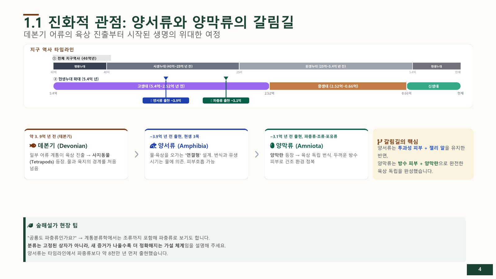
측두창은 눈구멍 뒤쪽 두개골에 난 구멍으로, 턱 근육이 자리할 공간을 제공한다. 개수와 위치는 양막류의 진화 계통을 이해하는 단서다.
| 분류 | 측두창 수 | 특징 | 포함 동물 |
|---|---|---|---|
| 무궁류(Anapsid) | 0쌍 | 눈구멍 외 측두창이 없음 | 교재에서는 거북류를 대표 예로 제시 |
| 단궁류(Synapsid) | 1쌍 | 눈구멍 뒤 아래쪽에 측두창 한 쌍 | 포유류와 그 조상 계통 |
| 이궁류(Diapsid) | 2쌍 | 눈구멍 뒤 위·아래에 측두창 두 쌍 | 현생 파충류·공룡·조류 계통 |
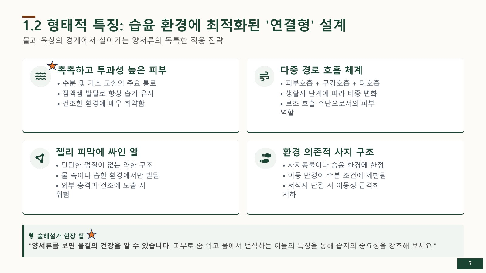
| 항목 | 양서류 | 파충류 |
|---|---|---|
| 피부 | 습윤, 호흡 기능(피부호흡) | 건조, 비늘 또는 판상 덮개 |
| 번식 | 물 필요 (알은 젤리질, 양막 없음) | 육상 완전 적응 (경질란, 양막 있음) |
| 발생 | 변태 과정 (올챙이 → 성체) | 변태 없음 (직접 발달) |
| 호흡 | 폐 + 피부호흡 + 점막호흡 | 폐 호흡만 |
| 심장 | 3실(심방 2 + 심실 1) | 3실 또는 4실 |
| 사지 | 대부분 4개(강화된 근육) | 4개 또는 없음(진화) |
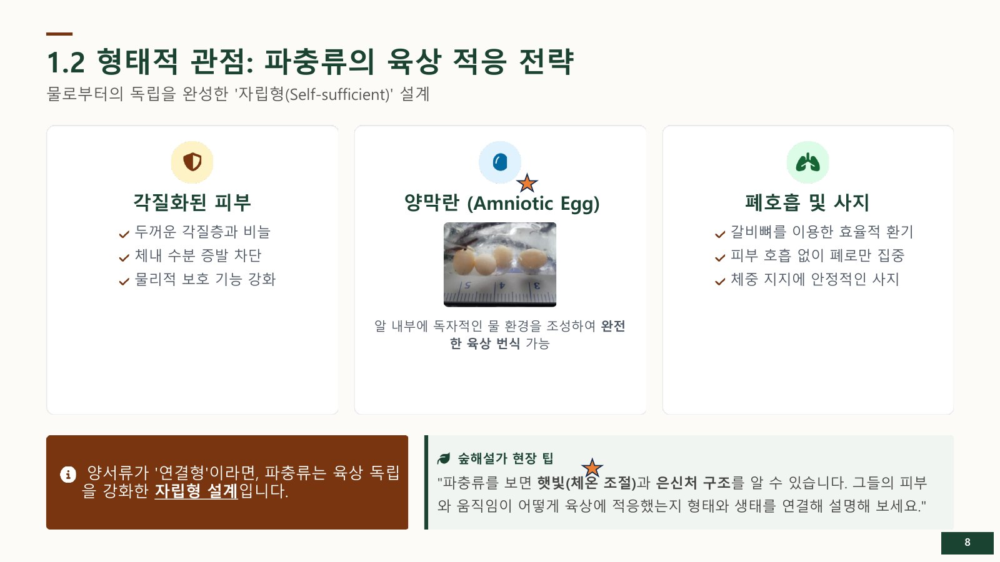
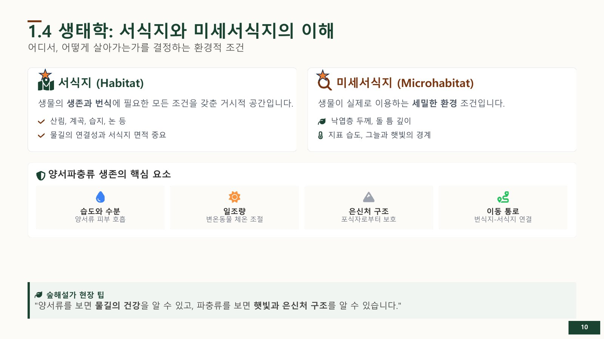
| 과 | 주요 종 | 특징 |
|---|---|---|
| 도롱뇽과(Hynobiidae) | 도롱뇽, 고리도롱뇽, 제주도롱뇽, 꼬리치레도롱뇽 등 | 성체도 꼬리를 유지하며 습윤한 미세서식지와 밀접 |
| 미주도롱뇽과(Plethodontidae) | 이끼도롱뇽 | 폐 없이 피부로 호흡하며 습한 너덜지대·동굴 등에 서식 |
| 과 | 주요 종 | 특징 |
|---|---|---|
| 개구리과(Ranidae) | 계곡개구리, 참개구리, 다리무늬개구리 | 물서식, 울음 크다 |
| 청개구리과(Hylidae) | 청개구리 | 나무 서식, 흡반 있음 |
| 두꺼비과(Bufonidae) | 두꺼비 | 땅서식, 유독 피부, 짝짓기 힘 |
| 무당개구리과·맹꽁이과 | 무당개구리, 맹꽁이 | 경고색 방어·땅파기와 장마철 번식 등 과별 생태가 뚜렷 |
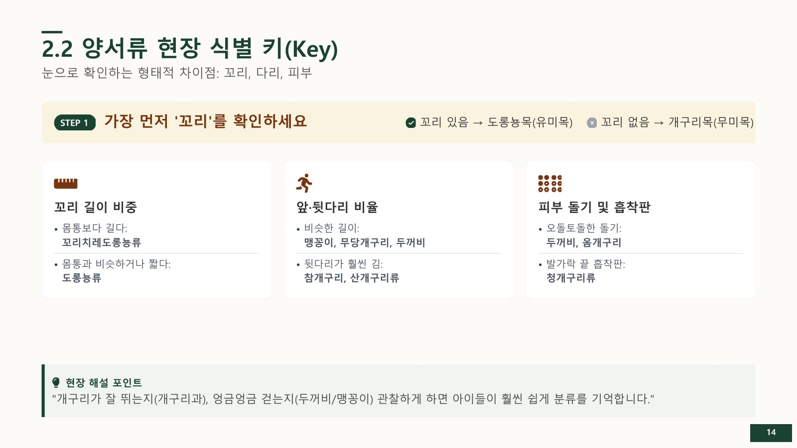
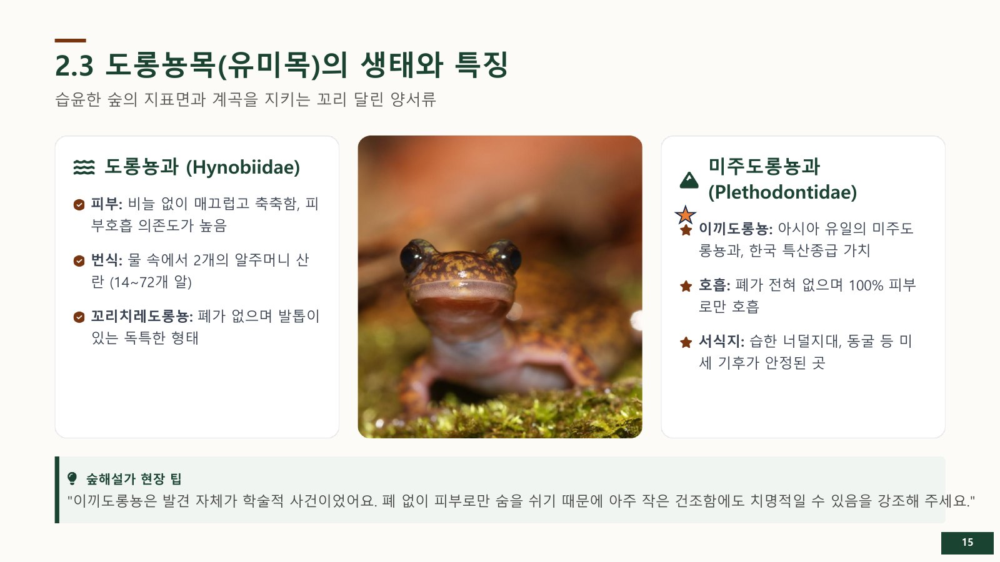
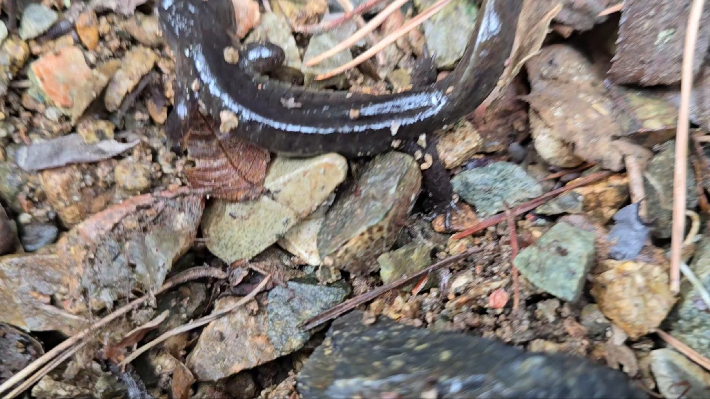
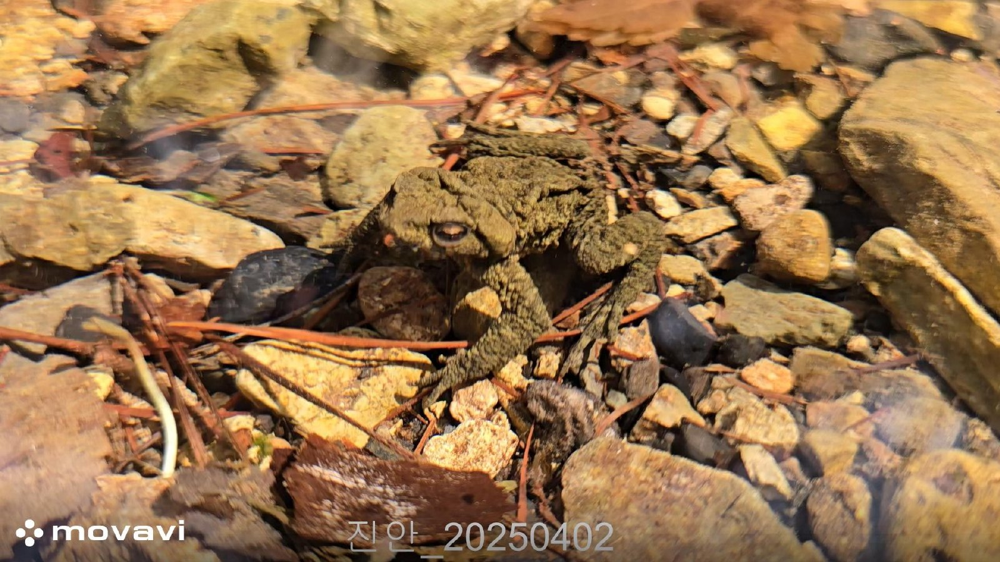
| 분류군 | 먼저 볼 특징 | 세부 확인 |
|---|---|---|
| 거북목 | 등갑·배갑 | 등의 돌기, 갑의 단단함, 머리 옆 줄무늬 |
| 도마뱀류 | 비늘의 광택·질감 | 기와형/알갱이형 비늘, 줄무늬, 발바닥 |
| 뱀류 | 전체 체형·움직임 | 몸 무늬 방향과 색, 머리·눈, 꼬리 |
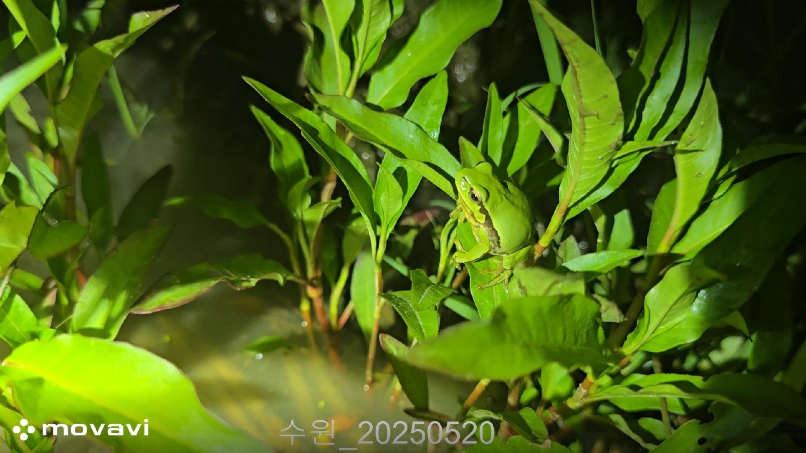
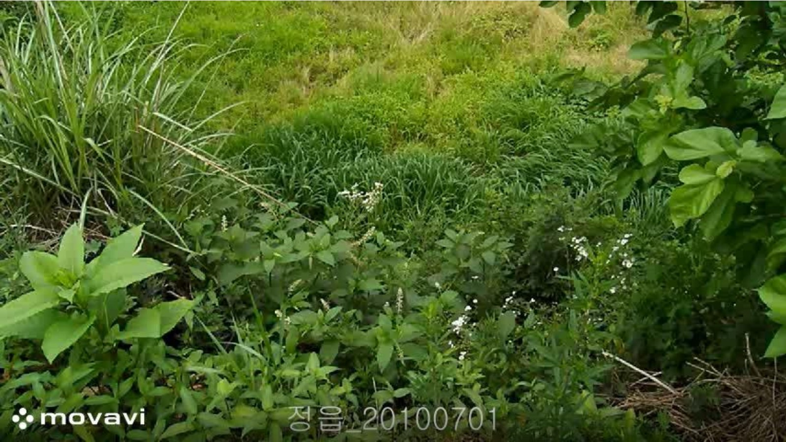
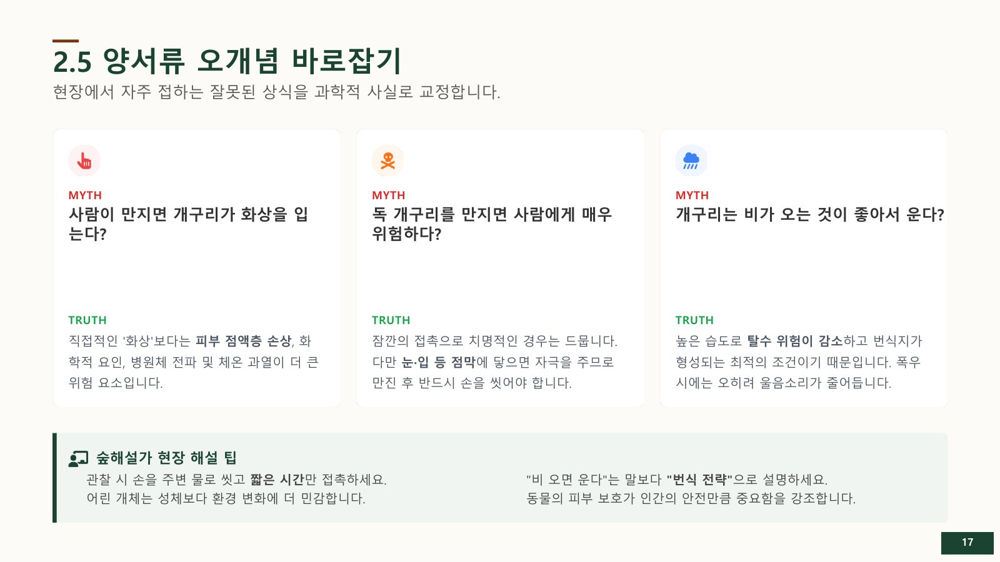
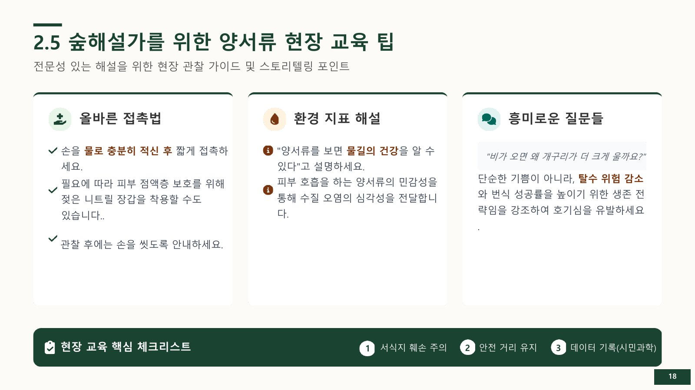
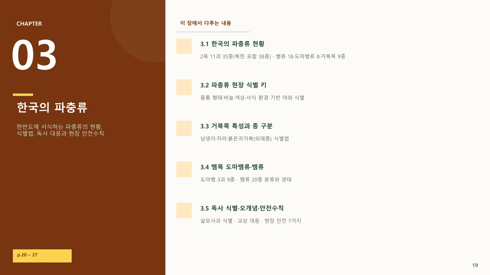
| 해야 할 일 | 하지 말아야 할 일 |
|---|---|
| 환자를 안정시키고 움직임을 줄인다. 즉시 119 신고 후 전문 의료기관으로 이동한다. | 입으로 독 빨기, 칼로 절개하기, 지혈대로 꽉 묶기, 뱀을 잡으려 하기 |
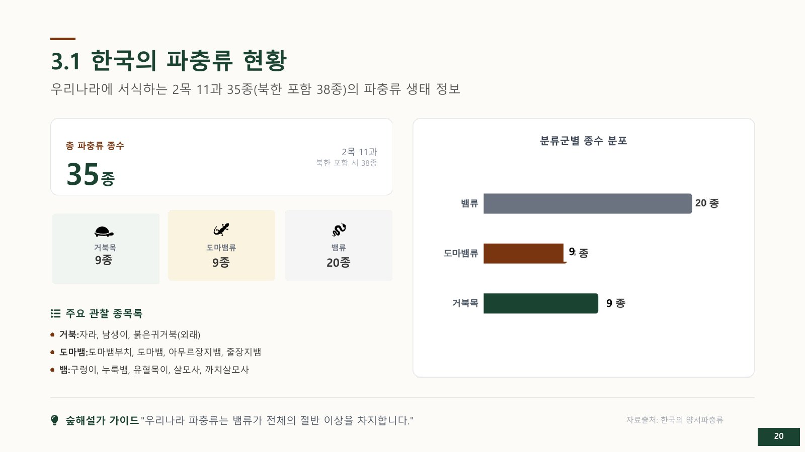
멸종위기 야생생물은 발견 자체보다 서식지 보전이 우선이다. 포획·채취·훼손하지 않고 거리를 둔 채 관찰하며, 번식지·이동로·미세서식지의 연결성을 지킨다.
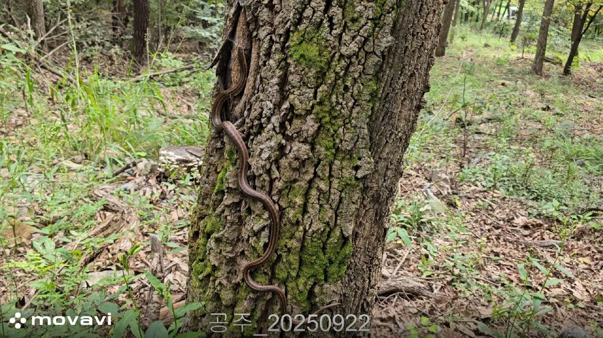
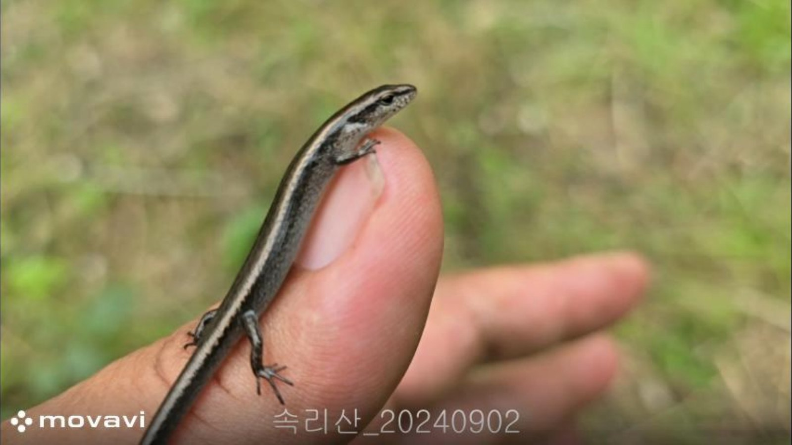
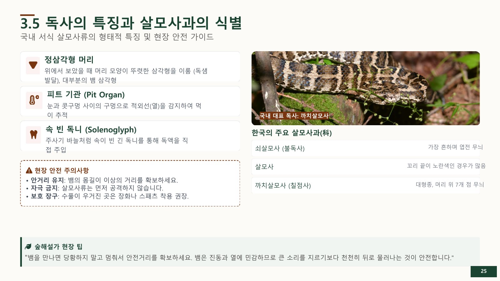